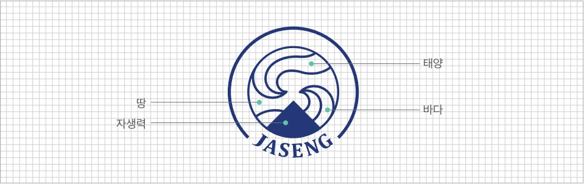

미션과 비전
미션
한의학과 의학의 장점을 살린 통합의학으로,
의술을 넘어 인술로써 고통 받는 환자의 건강한 삶을 위해 기여하겠습니다.
비전
표준화, 과학화, 세계화된 치료법으로
전세계 비수술 척추치료를 선도하는 병원
핵심가치 DOING
D · Dedication — 고객중심
표준화, 과학화, 세계화된 치료법으로 전세계 비수술 척추치료를 선도하는 병원을 지향합니다.
O · Ownership — 주인의식
자생인은 모두가 주인입니다.
I · Innovation — 변화선도
혁신을 두려워하지 않고 변화를 선도합니다.
N · Now — 실행중심
기획은 치밀하게, 실행은 즉시 합니다.
G · Growth — 동반성장
개개인의 역량을 발전시켜 모두 함께 성장합니다.
긍휼지심 선서
자생은 선대로부터의 독립운동 정신을 이어받아 긍휼지심의 의료철학을 실천하는 민족병원입니다.
나는 독립운동 정신을 이어받은 자긍심으로 변화와 혁신을 두려워하지 않으며, 자생인으로서 맡은 바 직무를 충실히 수행하겠습니다.
나는 아픈 환자의 몸을 내 몸과 같이 여기는 긍휼지심의 정신을 바탕으로 의술을 넘어 인술을 실천하겠습니다.
나는 인체의 자생력을 바탕으로 한 자생치료법으로 전 세계 비수술 척추치료를 선도하며 고통 받는 환자의 건강한 삶을 위해 기여하겠습니다.
자생 엠블렘
자생의 정통성을 나타내는 상징입니다. 중앙의 물결 문양은 태양·땅·바다를 형상화합니다. 자생력을 상징하는 물이 자연스럽게 교류하는 삼각뿔 형상에는 기(氣)를 다스려 환자를 치유하는 한방의 원리가 담겨 있습니다.
